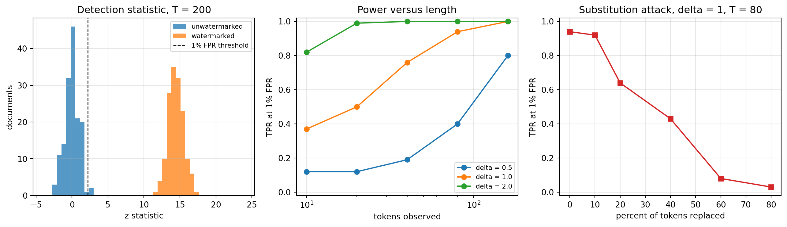
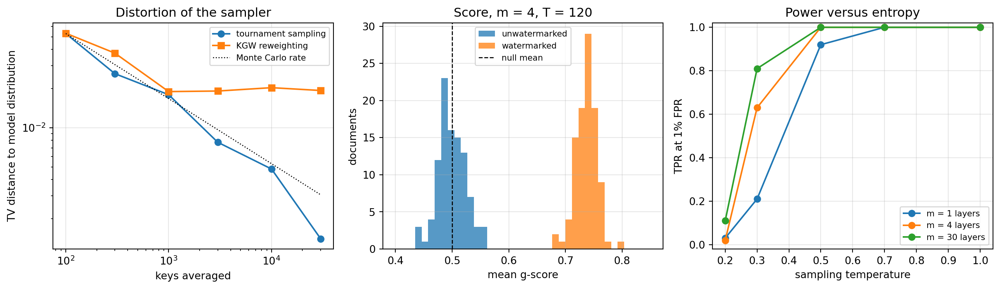

flowchart TD
A["Generated content"] --> B["Layer 1: C2PA signed manifest"]
A --> C["Layer 2: keyed watermark in the sampler"]
A --> D["Layer 3: post-hoc statistical detector"]
B --> B1["Defeated by: screenshot, re-encode, metadata strip"]
C --> C1["Defeated by: heavy paraphrase, low entropy output, key theft"]
D --> D1["Defeated by: stronger models, paraphrase, style transfer"]
B1 --> E["Verifier combines whatever evidence survived"]
C1 --> E
D1 --> E
267 Watermarking and Content Provenance
267.1 Introduction
Every safety property discussed so far in this part concerns what a model does. This chapter concerns something different: whether anyone can later tell that a model did it. Once generated text, images, and audio become indistinguishable from human work, a large class of downstream problems (attributing misinformation, enforcing academic integrity policies, keeping synthetic data out of the next pretraining corpus, satisfying disclosure law) reduces to one technical question. Given a piece of content and no other evidence, can we decide whether a particular model produced it?
Three families of answers exist, and they fail in different places.
Post-hoc detection constructs a classifier that looks for statistical fingerprints of machine text after the fact, using nothing but the content itself. It requires no cooperation from the model provider, which is what makes it attractive, and that is also why it is fundamentally weak: as models improve, the distribution of machine text converges on the distribution of human text, and the achievable gap between true positive and false positive rates shrinks toward zero. Section 267.2 makes that statement precise.
Watermarking takes the opposite approach. The provider deliberately perturbs generation so that outputs carry a keyed statistical signal, invisible to readers but detectable by anyone holding the key. Because the provider chooses the signal, detection no longer depends on models being distinguishable from humans by accident. The cost is that watermarking requires cooperation at generation time, and the signal can be attacked.
Cryptographic provenance attaches signed metadata (who produced this asset, with what tool, and what edits followed) to the file itself. C2PA Content Credentials are the dominant instance (Coalition for Content Provenance and Authenticity 2024). The signature is unforgeable, but the metadata is trivially strippable: a screenshot destroys it.
None of the three suffices alone, and a serious deployment layers all three. The centre of this chapter is the one scheme among them demonstrated at production scale on a frontier model: SynthID-Text, published in Nature by Dathathri et al. (2024), which watermarks Gemini outputs through a sampling algorithm called Tournament sampling, ships with a formal non-distortion guarantee, adds well under one percent to per-token latency, and was validated in a live experiment covering nearly 20 million responses. We derive its mathematics from first principles, prove its central quality-preservation property, implement it, and then spend equal effort on where it and every other scheme break.
The regulatory clock makes this more than an academic exercise. Article 50(2) of the EU AI Act (European Parliament and Council of the European Union 2024) requires providers of generative systems to mark synthetic output in a machine-readable format that is detectable as artificially generated, an obligation applicable since 2 August 2026. Watermarking is one of the two techniques the text and its accompanying guidance point toward; C2PA metadata is the other.
267.2 Detection as a Hypothesis Test
Fix a text \(x\) of \(T\) tokens. Detection is a binary hypothesis test:
\[ H_0: x \sim \mathcal{H} \quad \text{(not produced by the watermarked model)}, \qquad H_1: x \sim \mathcal{M} \quad \text{(produced by it)} . \tag{267.1}\]
A detector is a function \(D: \mathcal{X} \to [0,1]\), read as the probability of declaring \(H_1\). Its two operating numbers are the true positive rate \(\mathrm{TPR} = \mathbb{E}_{\mathcal{M}}[D]\) and the false positive rate \(\mathrm{FPR} = \mathbb{E}_{\mathcal{H}}[D]\).
267.2.1 The ceiling on post-hoc detection
For any detector whatsoever,
\[ \mathrm{TPR} - \mathrm{FPR} \;=\; \int D \,(\mathrm{d}\mathcal{M} - \mathrm{d}\mathcal{H}) \;\le\; \int_{\{\mathrm{d}\mathcal{M} > \mathrm{d}\mathcal{H}\}} (\mathrm{d}\mathcal{M} - \mathrm{d}\mathcal{H}) \;=\; \mathrm{TV}(\mathcal{M}, \mathcal{H}) , \tag{267.2}\]
where the inequality holds because \(0 \le D \le 1\), so integrating \(D\) against the signed measure \(\mathrm{d}\mathcal{M} - \mathrm{d}\mathcal{H}\) is maximized by setting \(D = 1\) exactly on the region where that measure is positive. Equation 267.2 is the whole story of post-hoc detection in one line: the detector’s usable margin is capped by the total variation distance between machine and human text, and no amount of classifier engineering moves that ceiling. Sadasivan et al. (2025) sharpen this into a bound on the area under the ROC curve, \(\mathrm{AUROC} \le \tfrac{1}{2} + \mathrm{TV} - \tfrac{1}{2}\mathrm{TV}^2\), and show empirically that light recursive paraphrase collapses DetectGPT-style detectors (Mitchell et al. 2023; Bao et al. 2024) toward chance.
Watermarking escapes Equation 267.2 by refusing its premise. Rather than hoping that \(\mathcal{M}\) differs from \(\mathcal{H}\), the provider makes it differ along a direction only the key holder can see. The design goal then becomes a three-way tension that organizes the rest of this chapter: make the keyed direction statistically loud (detectability), keep the marginal text distribution as close to the unwatermarked model as possible (quality), and keep the signal alive under editing (robustness).
267.2.2 Why the false positive rate must be brutal
Watermark detection is deployed at web scale, and at web scale a respectable-sounding error rate is a catastrophe. A platform screening \(10^{9}\) documents per day at \(\mathrm{FPR} = 10^{-3}\) manufactures a million false accusations per day. This is why production schemes report performance as TPR at a fixed low FPR (commonly \(1\%\) for research comparison and far lower in deployment), report calibrated \(p\)-values rather than raw scores, and are documented as evidence rather than proof. It is also why the null distribution deserves more scrutiny than the alternative: a null that is wrong by a factor of two in the tail turns a claimed \(10^{-6}\) into \(10^{-4}\), which is the difference between a usable system and a defamation engine.
267.3 Red and Green Lists: the KGW Scheme
Kirchenbauer et al. (2023) introduced the construction that defined the field. At step \(t\), hash the previous \(h\) tokens together with a secret key \(k\) to produce a seed \(r_t = H(x_{t-h}, \ldots, x_{t-1}, k)\), and use \(r_t\) to split the vocabulary \(\mathcal{V}\) into a green list \(G_t\) of size \(\gamma|\mathcal{V}|\) and a red complement. Then bias generation toward green tokens by adding a constant \(\delta\) to green logits before the softmax:
\[ \tilde{p}_t(x) \;=\; \frac{p_t(x)\, e^{\delta \mathbf{1}[x \in G_t]}}{\sum_{y \in \mathcal{V}} p_t(y)\, e^{\delta \mathbf{1}[y \in G_t]}} . \tag{267.3}\]
The seed depends on the text itself, so the green list changes at every position and no fixed subset of the vocabulary is favoured overall. A reader sees fluent text; a key holder sees an anomaly.
267.3.1 The detector and its null distribution
Detection needs neither the model nor the prompt, only the key. Recompute each \(G_t\) from the observed context and count green hits \(|s|_G = \sum_{t} \mathbf{1}[x_t \in G_t]\). Under \(H_0\), a text written without knowledge of the key lands in green with probability \(\gamma\) at each position independently, so \(|s|_G \sim \mathrm{Binomial}(T, \gamma)\) and
\[ z \;=\; \frac{|s|_G - \gamma T}{\sqrt{T\,\gamma(1-\gamma)}} \;\xrightarrow{\;d\;}\; \mathcal{N}(0,1), \qquad p\text{-value} = 1 - \Phi(z) . \tag{267.4}\]
The one assumption is hash independence across positions. Real text violates it whenever a context window repeats (boilerplate, lists, code), which fattens the tail and inflates the false positive rate. Production detectors deduplicate repeated \((\text{context}, \text{token})\) pairs before scoring for exactly this reason.
267.3.2 How much signal does the boost actually buy?
Let \(\alpha_t = \sum_{x \in G_t} \tilde{p}_t(x)\) be the green mass realized at step \(t\), and let \(\bar{\alpha} = \frac{1}{T}\sum_t \mathbb{E}[\alpha_t]\). Then \(\mathbb{E}[z] \approx \sqrt{T}\,(\bar{\alpha} - \gamma)/\sqrt{\gamma(1-\gamma)}\), so the number of tokens needed to reach power \(1-\beta\) at level \(\alpha\) is
\[ T \;\ge\; \frac{\bigl(z_{1-\alpha} + z_{1-\beta}\bigr)^2 \,\gamma(1-\gamma)}{(\bar{\alpha} - \gamma)^2} . \tag{267.5}\]
Everything hinges on the per-token gap \(\bar{\alpha} - \gamma\), and that gap is a function of entropy, not of \(\delta\) alone. The cleanest way to see this is an exact two-token calculation. Take \(\mathcal{V} = \{1,2\}\) with \(p = (p_1, p_2)\) and independent green membership with probability \(\gamma\). Averaging Equation 267.3 over the four membership patterns, the two symmetric patterns (both green, both red) give \(\alpha = 1\) and \(\alpha = 0\) respectively and contribute \(\gamma^2\) in total, so the excess green mass is
\[ \mathbb{E}[\alpha] - \gamma \;=\; \gamma(1-\gamma)\left[\frac{p_1 e^{\delta}}{p_1 e^{\delta} + p_2} + \frac{p_2 e^{\delta}}{p_2 e^{\delta} + p_1} - 1\right] . \tag{267.6}\]
Two special cases carry the entire lesson. At maximum entropy, \(p_1 = p_2 = \tfrac12\), the bracket collapses to \(\frac{e^\delta - 1}{e^\delta + 1} = \tanh(\delta/2)\), giving
\[ \mathbb{E}[\alpha] - \gamma \;=\; \gamma(1-\gamma)\tanh(\delta/2) , \tag{267.7}\]
which saturates at \(\gamma(1-\gamma)\) no matter how large \(\delta\) grows. At zero entropy, \(p_1 = 1\), the bracket is \(1 + 0 - 1 = 0\) and the gap vanishes identically. A deterministic model output cannot be watermarked at all, because the sampler has no freedom left to spend on the signal. That is not a defect of the KGW construction: Section 267.6 shows it is a property shared by every scheme in this chapter. For general vocabularies Kirchenbauer et al. (2023) lower bound the gap using the spike entropy \(S(p, z) = \sum_k p_k / (1 + z p_k)\), a smoothed entropy surrogate that behaves exactly like the two-token bracket, near zero for peaked distributions and near one for flat ones.
The cell below implements the scheme end to end on a synthetic language model whose per-step distribution is Zipf-shaped with a temperature knob, which lets us dial entropy directly and watch Equation 267.5 play out.
import numpy as np
import matplotlib.pyplot as plt
V, GAMMA = 1000, 0.25
# The green list at step t is a keyed pseudorandom function of the previous
# token. Precomputing it as a table is exactly the h = 1 context scheme and
# keeps the simulation fast.
KEY_TABLE = np.random.default_rng(20240).random((V, V)) < GAMMA # [prev, token]
BASE = -np.log(np.arange(1, V + 1)) # Zipf-shaped logits, shuffled per step
def step_probs(rng, temp):
z = BASE[rng.permutation(V)] / temp
z -= z.max()
e = np.exp(z)
return e / e.sum()
def generate(rng, start, T, temp, delta):
"""Sample T tokens. delta = 0 recovers the unwatermarked model."""
prev, out = start, np.empty(T, dtype=np.int64)
for t in range(T):
p = step_probs(rng, temp)
if delta > 0.0:
w = p * np.exp(delta * KEY_TABLE[prev])
p = w / w.sum()
prev = int(np.searchsorted(np.cumsum(p), rng.random()))
out[t] = prev
return out
def zstat(tokens, start):
prev, hits = start, 0
for tok in tokens:
hits += int(KEY_TABLE[prev, tok])
prev = int(tok)
T = len(tokens)
return (hits - GAMMA * T) / np.sqrt(T * GAMMA * (1 - GAMMA))
def power(delta, T, temp=1.0, ndoc=150, sub_rate=0.0):
z_wm, z_h0 = [], []
for d in range(ndoc):
r = np.random.default_rng(1000 + d)
start = int(r.integers(V))
wm = generate(r, start, T, temp, delta)
if sub_rate > 0.0: # attacker rewrites random tokens
mask = r.random(T) < sub_rate
wm = wm.copy()
wm[mask] = r.integers(V, size=int(mask.sum()))
z_wm.append(zstat(wm, start))
z_h0.append(zstat(generate(r, start, T, temp, 0.0), start))
z_wm, z_h0 = np.array(z_wm), np.array(z_h0)
thr = np.quantile(z_h0, 0.99)
return z_wm, z_h0, float((z_wm > thr).mean())
z_wm, z_h0, tpr = power(delta=2.0, T=200)
print(f"delta=2, T=200: mean z watermarked = {z_wm.mean():6.2f} "
f"mean z null = {z_h0.mean():5.2f} TPR at 1% FPR = {tpr:.2f}")
lengths = [10, 20, 40, 80, 160]
curves = {d: [power(delta=d, T=T, ndoc=100)[2] for T in lengths] for d in (0.5, 1.0, 2.0)}
# A strong watermark on a long document is unbreakable by random edits, so the
# robustness curve is measured in the hard regime: weak boost, short document.
subs = [0.0, 0.1, 0.2, 0.4, 0.6, 0.8]
robust = [power(delta=1.0, T=80, ndoc=100, sub_rate=s)[2] for s in subs]
fig, ax = plt.subplots(1, 3, figsize=(13.5, 4))
bins = np.linspace(-4, 24, 45)
ax[0].hist(z_h0, bins=bins, alpha=0.75, label="unwatermarked")
ax[0].hist(z_wm, bins=bins, alpha=0.75, label="watermarked")
ax[0].axvline(np.quantile(z_h0, 0.99), color="k", ls="--", lw=1, label="1% FPR threshold")
ax[0].set_xlabel("z statistic"); ax[0].set_ylabel("documents"); ax[0].legend(fontsize=8)
ax[0].set_title("Detection statistic, T = 200")
for d, ys in curves.items():
ax[1].plot(lengths, ys, marker="o", label=f"delta = {d}")
ax[1].set_xscale("log"); ax[1].set_xlabel("tokens observed"); ax[1].set_ylabel("TPR at 1% FPR")
ax[1].set_ylim(-0.02, 1.02); ax[1].legend(fontsize=8); ax[1].set_title("Power versus length")
ax[2].plot([100 * s for s in subs], robust, marker="s", color="tab:red")
ax[2].set_xlabel("percent of tokens replaced"); ax[2].set_ylabel("TPR at 1% FPR")
ax[2].set_ylim(-0.02, 1.02)
ax[2].set_title("Substitution attack, delta = 1, T = 80")
for a in ax:
a.grid(alpha=0.3)
plt.tight_layout()
plt.show()delta=2, T=200: mean z watermarked = 14.44 mean z null = -0.03 TPR at 1% FPR = 1.00
The middle panel is Equation 267.5 in picture form: power is governed by the product of the per-token gap and \(\sqrt{T}\), so a weak boost is recovered by reading more tokens, and a short snippet is undetectable at any boost. The right panel is the first hint of the robustness story, and it has to be measured in a deliberately hard regime: at \(\delta = 2\) and \(T = 200\) the signal is so far above threshold (left panel) that replacing half the tokens does not dent detection at all, so the curve shown uses \(\delta = 1\) and \(T = 80\). Random substitution damages the signal twice over, once by replacing a green token with a probably-red one and once by corrupting the context that seeds the next position, which is why power falls roughly with the square of the surviving fraction rather than linearly. The decay is still gradual rather than cliff-edged. Real paraphrase is a stronger attack than random substitution, and Kirchenbauer et al. (2024) show that watermarks still survive human and machine paraphrase provided the detector is given enough tokens, which is the same tradeoff restated.
267.3.3 The problem with KGW
Equation 267.3 changes the sampling distribution. That is not a subtle theoretical blemish: averaged over green lists, the reweighting systematically flattens peaked distributions, because a low-probability token that lands in green gains proportionally far more mass than a high-probability token that lands in green. The visible consequences are measurable degradation on constrained tasks (code, arithmetic, translation), reduced diversity across samples, and a quality knob \(\delta\) that a product team has to trade against detection every time. Section 267.5 quantifies the flattening directly.
267.4 Distortion-Free and Undetectable Watermarks
The alternative design principle is to leave the output distribution exactly intact and hide the signal in the randomness the sampler consumes rather than in the probabilities it samples from.
267.4.1 The exponential race, or Gumbel trick
The scheme usually attributed to Aaronson and analysed by Kuditipudi et al. (2024) works as follows. From the key and context derive pseudorandom numbers \(u_x \in (0,1)\), one per vocabulary entry, and pick
\[ x_t \;=\; \arg\max_{x \in \mathcal{V}} \; u_x^{1/p_t(x)} . \tag{267.8}\]
Write \(E_x = -\log u_x\), which is \(\mathrm{Exp}(1)\) when \(u_x\) is uniform. Maximizing \(u_x^{1/p_x} = \exp(-E_x/p_x)\) is the same as minimizing \(E_x/p_x\), and \(E_x/p_x \sim \mathrm{Exp}(p_x)\). The index of the smallest of independent exponentials with rates \(p_x\) is \(x\) with probability \(p_x / \sum_y p_y = p_x\). Therefore
\[ \Pr[x_t = x] \;=\; p_t(x) \quad \text{exactly, for every } x , \tag{267.9}\]
with no approximation and no quality knob. The scheme is distortion-free at the level of a single response. Detection exploits the fact that the winning token tends to be one whose \(u\) was unusually large: the score \(\sum_t -\log(1 - u_{x_t})\) is \(\mathrm{Gamma}(T, 1)\) under \(H_0\) (the \(u\) values at observed tokens are uniform when the text is independent of the key) and stochastically larger under \(H_1\).
The catch is determinism. Given the same key and the same context, Equation 267.8 returns the same token every time, so a user who asks the same question twice gets the same answer twice, and the property in Equation 267.9 (which is a statement about a single response marginal) no longer describes what the user experiences across responses. Kuditipudi et al. (2024) repair this with a random secret offset into a long key sequence, which restores randomness across generations, and detect using an alignment cost between the text and the key sequence evaluated by a permutation test, which yields exact \(p\)-values with no Gaussian approximation and tolerates insertions and deletions rather than substitutions only.
267.4.2 Undetectability in the cryptographic sense
Christ, Gunn, and Zamir (2024) give the strongest available formalization. A watermark is undetectable if no computationally bounded adversary, making adaptive queries and lacking the key, can distinguish watermarked from unwatermarked output with non-negligible advantage. Undetectability implies quality preservation against every efficiently computable metric at once, which is a far stronger claim than matching one marginal: no benchmark, human rater, or learned discriminator can find degradation, because finding it would break the underlying one-way function. Their construction embeds the signal in the empirical entropy the sampler accumulates, and it needs a minimum amount of entropy before a watermark can be planted at all. That requirement is the same entropy wall we met in Section 267.3.2, now stated as a theorem rather than an observation.
Undetectability is not robustness. A cryptographically undetectable watermark can still be erased by an attacker willing to rewrite the text, and Section 267.6 shows that this is not a gap waiting to be closed by better engineering.
267.5 SynthID-Text: Tournament Sampling at Production Scale
Dathathri et al. (2024) set out to satisfy the constraints an actual serving stack imposes, all at once: no change to training, no measurable quality loss, no access to the model at detection time, negligible added latency, and compatibility with speculative decoding. The result, SynthID-Text, is deployed in Gemini and open sourced, and the Nature paper is to date the only published account of a text watermark validated on live production traffic.
267.5.1 The construction
Fix a watermarking key \(k\) and a context width \(H\) (the paper uses \(H = 4\)). At step \(t\), seed a pseudorandom function with the sliding window and the key,
\[ r_t \;=\; h\bigl(x_{t-H}, \ldots, x_{t-1},\, k\bigr) , \tag{267.10}\]
and from \(r_t\) derive \(m\) independent g-functions \(g_1, \ldots, g_m\), where each \(g_\ell(x, r_t) \in \{0,1\}\) is an independent \(\mathrm{Bernoulli}(1/2)\) label attached to vocabulary entry \(x\). Now run a tournament. Draw \(2^m\) candidate tokens independently from the model distribution \(p_t\), pair them up, and in each pair keep the token with the higher \(g_1\) value, breaking ties uniformly at random. The \(2^{m-1}\) survivors are paired again and scored with \(g_2\), and so on for \(m\) layers until a single token remains. That token is emitted.
The point of the tournament is that the emitted token has won \(m\) successive coin-flip-labelled contests, so its g-values are biased upward in a way only the key holder can check, while the pool it was drawn from was distributed exactly according to the model.
267.5.2 The exact layer recursion, and why this is cheap
Literally drawing \(2^m\) samples would be absurd at \(m = 30\). It is also unnecessary, because the distribution of the winner has a closed form that can be pushed through the vocabulary one layer at a time. Consider one layer with current distribution \(p\) and label vector \(g\), and let
\[ q \;=\; \Pr_{x \sim p}\bigl[g(x) = 1\bigr] \;=\; \sum_{x} p(x)\, g(x) \tag{267.11}\]
be the green-side mass. Take two independent draws \(A, B \sim p\) and let \(W\) be the winner. Then \(\Pr[W = x] = 2\,p(x)\,\Pr[x \text{ beats an independent draw}]\), since \(x\) may arrive as either competitor. If \(g(x) = 1\), then \(x\) beats a \(g = 0\) opponent outright (probability \(1-q\)) and wins a tie with probability \(\tfrac12\) (opponent probability \(q\)). If \(g(x) = 0\), then \(x\) can only win a tie against another \(g = 0\) opponent. Hence
\[ p_{\text{next}}(x) \;=\; \begin{cases} p(x)\,(2 - q), & g(x) = 1, \\[2pt] p(x)\,(1 - q), & g(x) = 0 . \end{cases} \tag{267.12}\]
This is a proper distribution: \(q(2-q) + (1-q)(1-q) = 2q - q^2 + 1 - 2q + q^2 = 1\). Applying Equation 267.12 once per layer with a fresh \(g_\ell\) gives the exact distribution of the tournament winner in \(O(m|\mathcal{V}|)\) arithmetic, with no sampling of candidates at all. That is why the measured cost is so small: Dathathri et al. (2024) report per-token latency rising from \(15.527\) ms to \(15.615\) ms at \(m = 30\), an increase of \(0.57\%\), which disappears inside the noise of the forward pass.
267.5.3 The non-distortion theorem
The property that made this deployable is that Equation 267.12 preserves the model distribution in expectation over the key.
Claim. If \(g\) assigns independent \(\mathrm{Bernoulli}(1/2)\) labels to vocabulary entries, independently of \(p\), then \(\mathbb{E}_g[p_{\text{next}}(x)] = p(x)\) for every \(x\).
Proof. Split \(q = p(x) g(x) + q_{-x}\) where \(q_{-x} = \sum_{y \ne x} p(y) g(y)\) does not involve \(g(x)\), and note \(\mathbb{E}[q_{-x}] = \tfrac12\bigl(1 - p(x)\bigr)\). Conditioning on the label of \(x\),
\[ \mathbb{E}\bigl[p_{\text{next}}(x) \,\big|\, g(x) = 1\bigr] = p(x)\Bigl(2 - p(x) - \tfrac{1 - p(x)}{2}\Bigr), \qquad \mathbb{E}\bigl[p_{\text{next}}(x) \,\big|\, g(x) = 0\bigr] = p(x)\Bigl(1 - \tfrac{1 - p(x)}{2}\Bigr) . \tag{267.13}\]
Averaging the two with weight \(\tfrac12\) each, the \(p(x)\) terms cancel:
\[ \mathbb{E}_g\bigl[p_{\text{next}}(x)\bigr] = \frac{p(x)}{2}\Bigl[\,3 - p(x) - \bigl(1 - p(x)\bigr)\Bigr] = \frac{p(x)}{2}\cdot 2 = p(x) . \qquad \blacksquare \tag{267.14}\]
Because \(g_{\ell+1}\) is independent of everything used in layers \(1\) through \(\ell\), the tower property extends the claim to all \(m\) layers by induction: \(\mathbb{E}[p_m] = \mathbb{E}\bigl[\mathbb{E}[p_m \mid p_{m-1}]\bigr] = \mathbb{E}[p_{m-1}] = \cdots = p\). Tournament sampling is therefore non-distortionary in the single-token sense, for any number of layers, exactly and not approximately. Contrast this with Equation 267.3, where the reweighting is a fixed function of the green list and does not average away.
Two qualifications matter in practice. First, this is the weak form of non-distortion, an average over keys at one position; Dathathri et al. (2024) also define single-response and multi-response versions and obtain the stronger forms using repeated context masking, which simply declines to watermark a position whose context window has already been used, at a cost in detection strength. Second, the paper also offers a distortionary configuration that runs more than two competitors per match, buying detectability with a real quality loss, which is the right choice only when the deployment values attribution over fidelity.
267.5.4 Detection, and what the score means
The detector never touches the model. Recompute \(r_t\) from the observed context, look up the \(m\) g-values of the observed token, and average:
\[ \mathrm{score}(x_{1:T}) \;=\; \frac{1}{mT}\sum_{t=1}^{T}\sum_{\ell=1}^{m} g_\ell(x_t, r_t) . \tag{267.15}\]
Under \(H_0\) the g-values at observed tokens are fresh fair coins, so \(\mathbb{E}[\mathrm{score}] = \tfrac12\) with variance \(1/(4mT)\), which gives an immediately usable \(z\) statistic. Under \(H_1\) the score is inflated, and the size of the inflation follows from Equation 267.12. For a single layer,
\[ \mathbb{E}\bigl[g(W)\bigr] \;=\; \sum_{x} p_{\text{next}}(x) g(x) \;=\; q\,(2 - q) \;=\; 1 - (1-q)^2 . \tag{267.16}\]
Read the two extremes. If \(p\) is a point mass at \(x\), then \(q = g(x)\), so \(\mathbb{E}[g(W)] = g(x)\), which is itself a fair coin: zero signal, exactly as in Section 267.3.2. If \(p\) is high entropy, \(q\) concentrates near \(\tfrac12\) and \(\mathbb{E}[g(W)] \to \tfrac34\), the maximum available from a single layer. Entropy is again the currency that detectability is bought with, and no construction escapes that.
Equation 267.15 is the simplest of three detectors in the paper. A weighted mean that reweights layers does better, and a learned Bayesian detector, trained on watermarked and unwatermarked samples, does best; Section 267.6 explains why that difference turns out to be a security property and not just an accuracy one.
267.5.5 Implementation and empirical verification
The recursion in Equation 267.12 is four lines of array code. The Python tab below is executed and drives the figure; the Julia and Rust tabs are the same algorithm in the two languages a serving stack is more likely to use for a hot loop.
import numpy as np
import matplotlib.pyplot as plt
def tournament(p, g):
"""Exact winner distribution after m layers. g has shape (m, V) in {0, 1}."""
out = p.copy()
for row in g:
q = float(out @ row) # green side mass, eq. 954-synthid-q
out = out * np.where(row > 0.0, 2.0 - q, 1.0 - q)
return out
# --- Panel A: non-distortion, tournament versus KGW ------------------------
V_SMALL, M_SMALL, GAMMA_K, DELTA_K = 8, 4, 0.25, 2.0
rng = np.random.default_rng(7)
p_true = rng.random(V_SMALL) ** 2
p_true /= p_true.sum()
checkpoints = [100, 300, 1000, 3000, 10000, 30000]
acc_t, acc_k = np.zeros(V_SMALL), np.zeros(V_SMALL)
tv_t, tv_k = [], []
for i in range(1, checkpoints[-1] + 1):
r = np.random.default_rng(i)
g = (r.random((M_SMALL, V_SMALL)) < 0.5).astype(float)
acc_t += tournament(p_true, g)
green = r.random(V_SMALL) < GAMMA_K
w = p_true * np.exp(DELTA_K * green)
acc_k += w / w.sum()
if i in checkpoints:
tv_t.append(0.5 * np.abs(acc_t / i - p_true).sum())
tv_k.append(0.5 * np.abs(acc_k / i - p_true).sum())
print(f"TV at {checkpoints[-1]} keys: tournament = {tv_t[-1]:.4f} KGW = {tv_k[-1]:.4f}")
# --- Panels B and C: detection power --------------------------------------
V, T = 512, 120
BASE = -np.log(np.arange(1, V + 1))
def run(temp, m, ndoc=100, seed0=0):
s_wm, s_h0 = np.empty(ndoc), np.empty(ndoc)
for d in range(ndoc):
r = np.random.default_rng(seed0 + d)
tot_w = tot_h = 0.0
for t in range(T):
z = BASE[r.permutation(V)] / temp
z -= z.max()
e = np.exp(z)
p = e / e.sum()
gr = np.random.default_rng((d * 7919 + t * 104729) % (2**63 - 1))
g = (gr.random((m, V)) < 0.5).astype(float)
pw = tournament(p, g)
tok_w = int(np.searchsorted(np.cumsum(pw), r.random())) # watermarked
tok_h = int(np.searchsorted(np.cumsum(p), r.random())) # unwatermarked
tot_w += g[:, tok_w].mean()
tot_h += g[:, tok_h].mean()
s_wm[d], s_h0[d] = tot_w / T, tot_h / T
thr = np.quantile(s_h0, 0.99)
return s_wm, s_h0, float((s_wm > thr).mean())
s_one, _, _ = run(temp=1.0, m=1)
print(f"m=1, temp=1.0: mean g-score = {s_one.mean():.3f} "
f"theory 1 - (1 - q)^2 at q = 1/2 gives {1 - 0.5**2:.3f}")
s_wm, s_h0, tpr = run(temp=1.0, m=4)
print(f"m=4, temp=1.0: mean score watermarked = {s_wm.mean():.3f} "
f"null = {s_h0.mean():.3f} TPR at 1% FPR = {tpr:.2f}")
temps = [0.2, 0.3, 0.5, 0.7, 1.0]
power_by_m = {m: [run(temp=tp, m=m)[2] for tp in temps] for m in (1, 4, 30)}
# The mean score itself weakens as layers are added, even though power rises:
# this is the vulnerability the layer inflation attack exploits (sec. 954-stealing).
for m in (1, 4, 30):
sm, _, _ = run(temp=0.7, m=m, ndoc=40)
print(f"temp=0.7, m={m:2d}: mean g-score = {sm.mean():.3f}")
fig, ax = plt.subplots(1, 3, figsize=(13.5, 4))
ax[0].loglog(checkpoints, tv_t, marker="o", label="tournament sampling")
ax[0].loglog(checkpoints, tv_k, marker="s", label="KGW reweighting")
ax[0].loglog(checkpoints, [tv_t[0] * (checkpoints[0] / n) ** 0.5 for n in checkpoints],
"k:", lw=1, label="Monte Carlo rate")
ax[0].set_xlabel("keys averaged"); ax[0].set_ylabel("TV distance to model distribution")
ax[0].legend(fontsize=8); ax[0].set_title("Distortion of the sampler")
bins = np.linspace(0.40, 0.85, 40)
ax[1].hist(s_h0, bins=bins, alpha=0.75, label="unwatermarked")
ax[1].hist(s_wm, bins=bins, alpha=0.75, label="watermarked")
ax[1].axvline(0.5, color="k", ls="--", lw=1, label="null mean")
ax[1].set_xlabel("mean g-score"); ax[1].set_ylabel("documents")
ax[1].legend(fontsize=8); ax[1].set_title("Score, m = 4, T = 120")
for m, ys in power_by_m.items():
ax[2].plot(temps, ys, marker="o", label=f"m = {m} layers")
ax[2].set_xlabel("sampling temperature"); ax[2].set_ylabel("TPR at 1% FPR")
ax[2].set_ylim(-0.02, 1.02); ax[2].legend(fontsize=8)
ax[2].set_title("Power versus entropy")
for a in ax:
a.grid(alpha=0.3)
plt.tight_layout()
plt.show()TV at 30000 keys: tournament = 0.0014 KGW = 0.0193
m=1, temp=1.0: mean g-score = 0.749 theory 1 - (1 - q)^2 at q = 1/2 gives 0.750
m=4, temp=1.0: mean score watermarked = 0.738 null = 0.499 TPR at 1% FPR = 1.00
temp=0.7, m= 1: mean g-score = 0.714
temp=0.7, m= 4: mean g-score = 0.701
temp=0.7, m=30: mean g-score = 0.637
# Exact tournament layer recursion, eq. 954-synthid-layer.
function tournament(p::Vector{Float64}, g::Matrix{Float64})
out = copy(p) # g is (m, V) with entries in {0, 1}
for l in 1:size(g, 1)
row = @view g[l, :]
q = dot(out, row) # green side mass
@inbounds for x in eachindex(out)
out[x] *= row[x] > 0.0 ? (2.0 - q) : (1.0 - q)
end
end
return out
end
# Mean g-score detector, eq. 954-synthid-score.
function mean_g_score(tokens::Vector{Int}, gvals::Vector{Matrix{Float64}})
s = 0.0
for (t, tok) in enumerate(tokens)
s += sum(@view gvals[t][:, tok]) / size(gvals[t], 1)
end
return s / length(tokens)
end/// Exact tournament layer recursion (eq. 954-synthid-layer).
/// `g` is a row-major m by v matrix of 0.0 / 1.0 labels.
pub fn tournament(p: &[f64], g: &[f64], m: usize, v: usize) -> Vec<f64> {
let mut out = p.to_vec();
for layer in 0..m {
let row = &g[layer * v..(layer + 1) * v];
let q: f64 = out.iter().zip(row).map(|(pi, gi)| pi * gi).sum();
for (x, val) in out.iter_mut().enumerate() {
*val *= if row[x] > 0.0 { 2.0 - q } else { 1.0 - q };
}
}
out
}
/// Mean g-score detector (eq. 954-synthid-score).
pub fn mean_g_score(tokens: &[usize], g_per_step: &[Vec<f64>], m: usize, v: usize) -> f64 {
let total: f64 = tokens
.iter()
.zip(g_per_step)
.map(|(&tok, g)| (0..m).map(|l| g[l * v + tok]).sum::<f64>() / m as f64)
.sum();
total / tokens.len() as f64
}Three results are worth reading carefully. The left panel is the non-distortion theorem of Section 267.5.3 made empirical: the tournament’s key-averaged distribution converges to the model distribution along the \(n^{-1/2}\) Monte Carlo line, while KGW’s converges to something a fixed distance away, because its bias is real rather than statistical. The centre panel confirms Equation 267.16: the printed single-layer mean g-score is \(0.749\) against a theoretical \(1 - (1 - \tfrac12)^2 = 0.750\), while the null sits on \(\tfrac12\) as it must. The right panel shows the interaction that motivates \(m = 30\) in production: at high temperature a single layer already saturates detection, but as entropy falls, extra layers extract signal that one layer cannot, which is precisely the regime (short, factual, low-temperature responses) where deployed detection is hardest. Push the temperature lower still and all three configurations collapse together toward chance, which is the entropy wall of Section 267.6.1 arriving as a floor that no amount of algorithm design lifts.
267.5.6 Serving at scale: speculative sampling
Production serving stacks use speculative decoding (Chapter 252 covers the mechanism), where a small draft model proposes tokens that the large model accepts or rejects in a batch. A watermark applied naively after speculation would either be destroyed by the acceptance rule or destroy the acceptance rate. Dathathri et al. (2024) give two combinations: a high-detectability variant that preserves watermark strength while accepting fewer draft tokens, and a fast variant that preserves the acceptance rate (and thus the throughput the whole technique exists to provide) while recovering detection strength through the learned Bayesian scorer. The existence of this pair is the clearest evidence that watermarking is an engineering discipline and not only an information-theoretic one: the interesting constraints came from the serving stack.
267.5.7 What the live experiment showed
The claim that a watermark preserves quality is usually supported by benchmark deltas and a small human study. Dathathri et al. (2024) instead ran watermarked and unwatermarked responses side by side in live Gemini traffic and compared user feedback across nearly 20 million responses. The thumbs-up rate differed by \(0.01\%\) (in favour of watermarked) and the thumbs-down rate by \(0.02\%\) (also in favour of watermarked), both statistically indistinguishable from zero at the \(95\%\) level. This is currently the strongest available evidence that non-distortionary watermarking is free in the way the theory says it should be, and it is the reason this scheme, rather than an equally elegant predecessor, is the one running in a frontier product.
267.6 Fundamental Limits and Attacks
Having built the machinery, we now take it apart. A reader who leaves this chapter believing watermarks settle attribution has learned the wrong lesson.
267.6.1 The entropy wall
Both Equation 267.6 and Equation 267.16 vanish when the model’s next-token distribution is deterministic, and Christ, Gunn, and Zamir (2024) make the same requirement a formal precondition. The consequence is practical and unavoidable: short answers, greedy decoding, quotations, code with a single natural formatting, and any output the model was going to produce with near certainty cannot carry a watermark. No scheme in this chapter can mark the string “42”. This directly bounds regulatory ambitions, since a large fraction of real assistant traffic consists of short, low-entropy responses.
267.6.2 Strong watermarking is impossible
Zhang et al. (2024) prove that under natural assumptions no watermarking scheme is strong, meaning no scheme resists an attacker who is computationally bounded but has access to a quality oracle (can tell whether a candidate rewrite is still good) and a perturbation oracle (can propose local rewrites, for example a smaller language model). The attack is a random walk in text space: repeatedly perturb, keep the rewrite when quality is maintained, and the walk mixes toward the unwatermarked distribution while quality stays high. The result holds even when detection is private and the key is secret, and the authors demonstrate it against KGW, exponential-race, and Unigram (Zhao et al. 2024) text schemes and against Stable Signature (Fernandez et al. 2023) and invisible-watermark image schemes.
The right reading is not that watermarking is pointless. It is that watermarking raises the cost of undetected misuse from zero to something, which is enough to deter casual misuse and to support platform-scale triage, and is not enough to support an adversarial proceeding against a motivated attacker.
267.6.3 Stealing, spoofing, and the false accusation problem
Jovanović, Staab, and Vechev (2024) show that querying a watermarked API is enough to approximately reverse engineer the key’s effect on token statistics. With that approximation in hand, an attacker can scrub (remove the watermark from generated text) and, worse, spoof (write harmful text that the provider’s own detector attributes to the provider’s model). They report both attacks succeeding at over \(80\%\) average success rate for under 50 US dollars of queries against schemes previously considered safe. Spoofing inverts the entire threat model: the technology built to attribute misinformation becomes a tool for manufacturing attributable misinformation. Any deployment must treat a positive detection as evidence to be corroborated, never as proof of origin.
A second, subtler attack targets SynthID specifically. Omidi, Dong, and Wang (2026) prove that the mean score of Equation 267.15 degrades as the number of tournament layers grows (the printed diagnostics under Figure 267.3 show exactly this: at a fixed temperature the mean g-score slides toward \(\tfrac12\) as \(m\) rises, even while detection power improves), and turn this into a layer inflation attack. They also show the Bayesian detector is markedly more resistant, which is a useful reminder that the choice of scoring rule is part of the security surface, not a post-processing detail.
267.6.4 Radioactivity: watermarks leak training data
Sander et al. (2024) found that a watermark planted in generated text survives being used as training data. If a model is fine-tuned on watermarked outputs, residual watermark signal remains detectable in the fine-tuned model’s own generations, with \(p\)-values below \(10^{-5}\) when as little as \(5\%\) of the fine-tuning corpus was watermarked. This is genuinely dual use. It gives providers a way to detect unauthorized distillation of their models, and it gives anyone holding a key a way to infer what data somebody else trained on, which is a confidentiality property nobody consented to.
267.7 Beyond Text: Images, Audio, and Signed Provenance
Image and audio watermarking has a longer history and a different structure, since a continuous signal offers far more redundant capacity than a token sequence.
Three approaches dominate. Post-generation embedding modifies the produced asset, which is simple and model-agnostic and also the easiest to strip. Rooting the watermark in the generator fine-tunes the model itself: the Stable Signature (Fernandez et al. 2023) fine-tunes a latent diffusion decoder so that every image it produces carries a fixed binary signature recoverable by a pretrained extractor, which means the mark cannot be omitted by a user of the weights. Marking the initial noise is the diffusion-native trick: Tree-Ring watermarks (Wen et al. 2023) plant a ring-shaped pattern in the Fourier domain of the sampling noise, then detect by inverting the diffusion process, which survives crops, compression, and colour shifts. Extending the cryptographic line of Section 267.4.2, Gunn, Zhao, and Song (2025) build the first undetectable image watermark by choosing initial latents with a pseudorandom error-correcting code, preserving quality under any efficiently computable metric while remaining robust to existing removal attacks.
Watermarks and C2PA Content Credentials (Coalition for Content Provenance and Authenticity 2024) fail in complementary ways, which is the argument for shipping both. A C2PA manifest is a cryptographically signed record of origin and edit history, so it carries far richer information than a one-bit watermark, and its signature cannot be forged. It also disappears the moment content is screenshotted, re-encoded, or passed through a platform that strips metadata. A watermark carries almost no information but is bound to the content itself and survives the transformations that destroy metadata. Watermark plus manifest plus a post-hoc detector produces a system where each layer covers a different attack, and this is exactly the architecture the EU AI Act’s machine-readable marking obligation (European Parliament and Council of the European Union 2024) pushes providers toward.
267.8 Deployment Practice
A short set of rules follows from everything above.
Set thresholds from the null, then divide by your scale. Choose the operating point from the false positive budget implied by daily volume (Section 267.2.2), not from a benchmark’s conventional \(1\%\). Validate the null empirically on human text from the same domain, since the independence assumption behind Equation 267.4 and the null of Equation 267.15 both weaken on boilerplate and code.
Report \(p\)-values with token counts. A detection on 40 tokens and a detection on 4000 tokens are different objects. Equation 267.5 tells you the second is worth roughly a hundred times more evidence, and a user-facing verdict that hides length is misleading.
Treat the key as a signing key. Detection ability equals key possession, so key compromise means both loss of detection and the ability to forge attributions. Rotate keys, keep detection behind an API rather than distributing keys, and expect that even without compromise an adversary can approximate the key’s behaviour through queries (Jovanović, Staab, and Vechev 2024).
Prefer non-distortionary schemes unless attribution outranks quality. The tournament construction of Section 267.5 gives a signal for free in the marginal-preserving sense proved in Section 267.5.3. Reach for a distortionary configuration only when a deliberate quality budget has been agreed.
Never let a detector make a punitive decision alone. Given Section 267.6.2 and Section 267.6.3, a positive result is evidence that content is consistent with generation by a watermarked model. It is not proof, it can be spoofed, and the population being screened (students, journalists, job applicants) is precisely the one where a false positive causes the most harm.
Watermark what you can, and be explicit about what you cannot. The entropy wall of Section 267.6.1 means short and deterministic outputs go unmarked. A compliance story that claims otherwise is wrong on the mathematics.
267.9 Conclusion
Post-hoc detection is bounded by Equation 267.2 and gets worse as models improve. Watermarking sidesteps that bound by putting a keyed signal into the sampler, and the design space is organized by what the scheme does to the output distribution: KGW reweights logits and accepts a quality cost, exponential-race schemes leave the single-response marginal exactly intact, and cryptographic constructions strengthen that into indistinguishability against all efficient adversaries. SynthID-Text (Dathathri et al. 2024) is the point where this line of work met a production system: Tournament sampling preserves the model distribution exactly in expectation (Section 267.5.3), costs a fraction of a percent in latency, composes with speculative decoding, and held up across nearly 20 million live responses.
What none of it does is settle attribution against an adversary. Entropy bounds what can be marked, strong watermarking is impossible against a quality oracle and a perturbation oracle, and keys can be approximated by querying. The honest summary is that watermarking converts an impossible problem (identify machine text in general) into a tractable one (identify unedited output of a cooperating model at sufficient length), and that this narrower problem, solved well and layered with signed provenance, is worth solving.
267.10 References
Dathathri, S., See, A., Ghaisas, S., Huang, P.-S., McAdam, R., Welbl, J., et al. (2024). Scalable watermarking for identifying large language model outputs. Nature, 634(8035), 818 to 823. https://doi.org/10.1038/s41586-024-08025-4
Kirchenbauer, J., Geiping, J., Wen, Y., Katz, J., Miers, I., and Goldstein, T. (2023). A watermark for large language models. International Conference on Machine Learning (ICML), PMLR 202, 17061 to 17084. https://proceedings.mlr.press/v202/kirchenbauer23a.html
Kirchenbauer, J., Geiping, J., Wen, Y., Shu, M., Saifullah, K., Kong, K., et al. (2024). On the reliability of watermarks for large language models. International Conference on Learning Representations (ICLR). https://doi.org/10.48550/arXiv.2306.04634
Kuditipudi, R., Thickstun, J., Hashimoto, T., and Liang, P. (2024). Robust distortion-free watermarks for language models. Transactions on Machine Learning Research. https://doi.org/10.48550/arXiv.2307.15593
Christ, M., Gunn, S., and Zamir, O. (2024). Undetectable watermarks for language models. Conference on Learning Theory (COLT), PMLR 247. https://proceedings.mlr.press/v247/christ24a.html
Zhao, X., Ananth, P., Li, L., and Wang, Y.-X. (2024). Provable robust watermarking for AI-generated text. International Conference on Learning Representations (ICLR). https://doi.org/10.48550/arXiv.2306.17439
Zhang, H., Edelman, B. L., Francati, D., Venturi, D., Ateniese, G., and Barak, B. (2024). Watermarks in the sand: impossibility of strong watermarking for language models. International Conference on Machine Learning (ICML), PMLR 235. https://proceedings.mlr.press/v235/zhang24o.html
Jovanović, N., Staab, R., and Vechev, M. (2024). Watermark stealing in large language models. International Conference on Machine Learning (ICML), PMLR 235. https://proceedings.mlr.press/v235/jovanovic24a.html
Sander, T., Fernandez, P., Durmus, A., Douze, M., and Furon, T. (2024). Watermarking makes language models radioactive. Advances in Neural Information Processing Systems (NeurIPS). https://doi.org/10.48550/arXiv.2402.14904
Sadasivan, V. S., Kumar, A., Balasubramanian, S., Wang, W., and Feizi, S. (2025). Can AI-generated text be reliably detected? Stress testing AI text detectors under various attacks. Transactions on Machine Learning Research. https://doi.org/10.48550/arXiv.2303.11156
Mitchell, E., Lee, Y., Khazatsky, A., Manning, C. D., and Finn, C. (2023). DetectGPT: zero-shot machine-generated text detection using probability curvature. International Conference on Machine Learning (ICML), PMLR 202, 24950 to 24962. https://proceedings.mlr.press/v202/mitchell23a.html
Bao, G., Zhao, Y., Teng, Z., Yang, L., and Zhang, Y. (2024). Fast-DetectGPT: efficient zero-shot detection of machine-generated text via conditional probability curvature. International Conference on Learning Representations (ICLR). https://doi.org/10.48550/arXiv.2310.05130
Fernandez, P., Couairon, G., Jégou, H., Douze, M., and Furon, T. (2023). The Stable Signature: rooting watermarks in latent diffusion models. IEEE/CVF International Conference on Computer Vision (ICCV), 22409 to 22420. https://doi.org/10.1109/ICCV51070.2023.02053
Wen, Y., Kirchenbauer, J., Geiping, J., and Goldstein, T. (2023). Tree-Ring watermarks: fingerprints for diffusion images that are invisible and robust. Advances in Neural Information Processing Systems (NeurIPS). https://doi.org/10.48550/arXiv.2305.20030
Gunn, S., Zhao, X., and Song, D. (2025). An undetectable watermark for generative image models. International Conference on Learning Representations (ICLR). https://doi.org/10.48550/arXiv.2410.07369
Omidi, R., Dong, Y., and Wang, B. (2026). On Google’s SynthID-Text LLM watermarking system: theoretical analysis and empirical validation. arXiv preprint. https://doi.org/10.48550/arXiv.2603.03410
Coalition for Content Provenance and Authenticity (2024). C2PA technical specification. https://c2pa.org/specifications/specifications/
European Parliament and Council of the European Union (2024). Regulation (EU) 2024/1689 laying down harmonised rules on artificial intelligence (Artificial Intelligence Act). https://eur-lex.europa.eu/eli/reg/2024/1689/oj